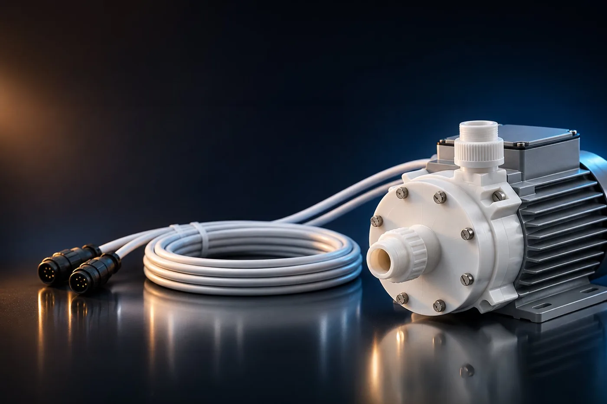
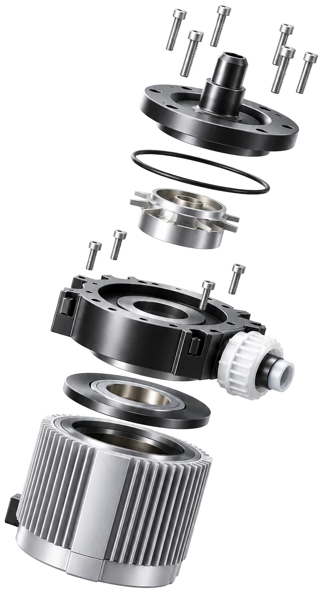

BPS-i30
- 최대 유량
- 7.4 lpm
- 최대 압력
- 1.5 bar
2 gpm · 22 psi

유체의 흐름에는 각기 다른 조건과 요구가 존재합니다. RTCK는 다양한 펌프 기술과 제품에 대한 이해를 바탕으로 공정에 적합한 솔루션을 연결합니다. 성능, 호환성, 운전 조건에 대한 기술적 검토부터 제품 공급까지, 안정적인 공정 운영을 위한 최적의 선택을 지원합니다.
PUMP
Technology
Pump
Levitronix® · BPS Series
베어링리스 펌프

Features

기계적 접촉이 없어 마모 입자가 생기지 않습니다. 접액부는 고순도 불소수지로만 구성됩니다.
밸브·데드존이 없는 개방형 헤드. 필터 수명과 민감 유체의 안정성에 직접 기여합니다.
전자식 임펠러 제어로 유량·압력을 높은 턴다운 비율로 조절. 유량·압력 컨트롤러와 피드백 연동.
마모 부품이 없는 구조. 공압 펌프 대비 작은 설치 공간, 낮은 소음·진동, 예방 정비 데이터 지원.
최대 유량 / 최대 압력 기준
2 gpm · 22 psi
High Pressure
1 gpm · 40 psi
High Flow
3.9 gpm · 16 psi
5.3 gpm · 29 psi
출처: Levitronix 제품 페이지